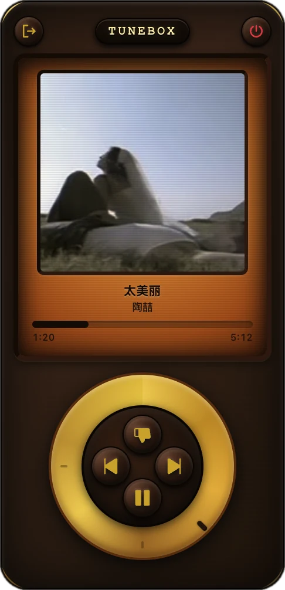
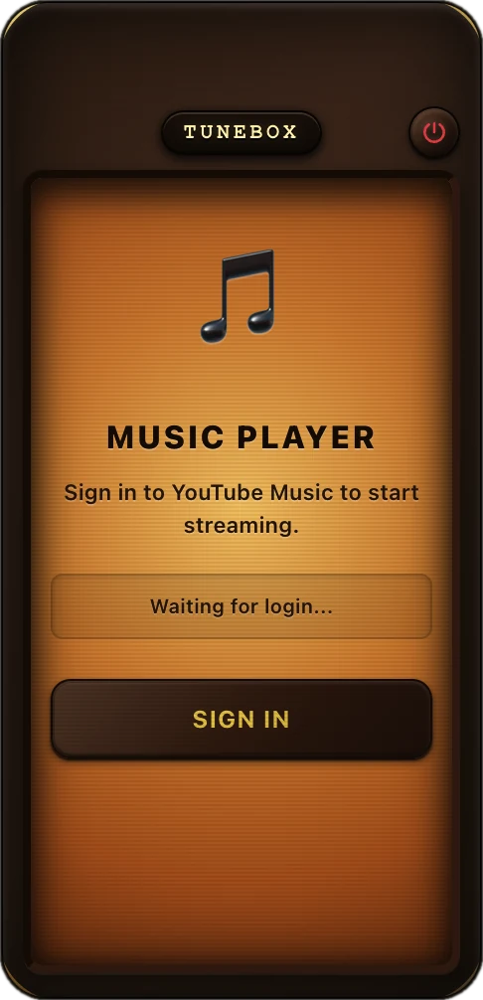

FM 88.0 — 108.0 · A retro player for YouTube Music
YouTube Music in a walnut-and-brass radio. Free, open source, for macOS, Windows and Linux.

Amber displayCover, title, artist, progress, and the lyric line when a song has one
Your YouTube MusicYour account, your playlists, your recommendations
Click wheelPlay, pause, skip or dislike. Drag the ring for volume
01 · Listen
Sign in with your own account. Your playlists, likes and recommendations are the ones you already have. TuneBox only changes what you press.

Play, pause, skip, or dislike and skip, all from one brass wheel.
Drag the outer ring to turn the sound up or down.
Cover art, title, artist, progress, and the lyric line that is playing right now.
The following track is loaded in the background, so changes start fast.
Login and volume are still there after a restart.
The app tells you when a new version is on GitHub Releases.
02 · Download
Free · MIT licensed
NOTENot code-signed yet. If Gatekeeper blocks it, right-click the app and choose Open. In-app update may fail on macOS; if it does, download the new version here.
03 · FAQ
You sign in on the official YouTube Music page inside the app. Your session stays in the app's local profile on your computer, and signing out clears it. The code is open source, so you can read exactly what it does.
No. TuneBox plays what the YouTube Music web player plays for your account, so a free account gets the same ads and limits as in the browser.
No. TuneBox is an independent, unofficial client and is not affiliated with Google or YouTube.
Open an issue on GitHub with your OS and TuneBox version.